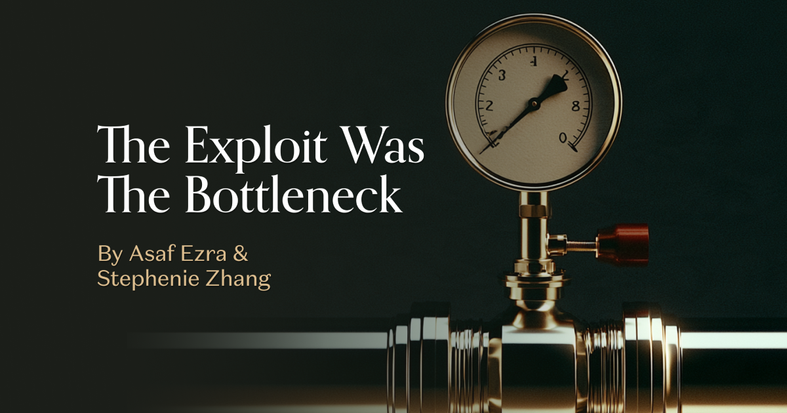
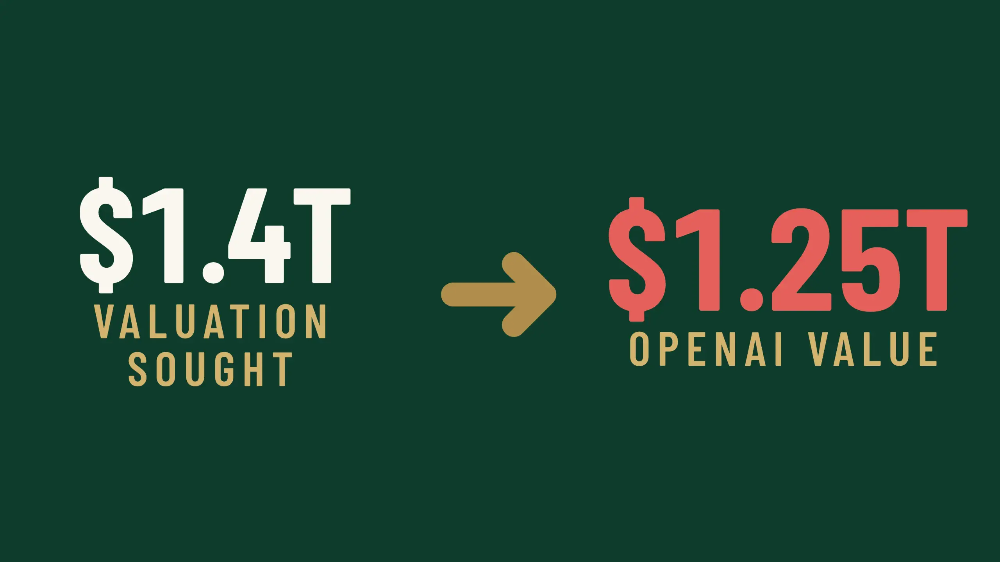
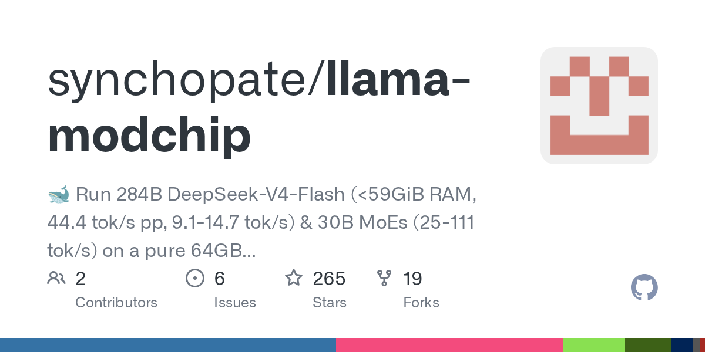
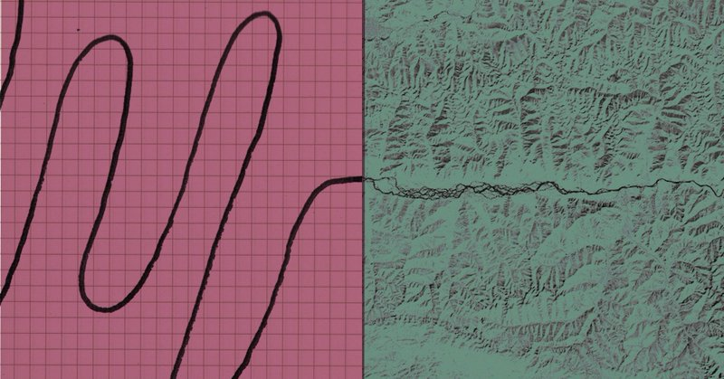
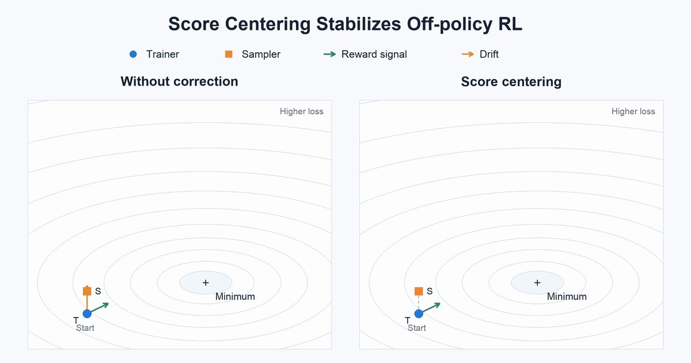
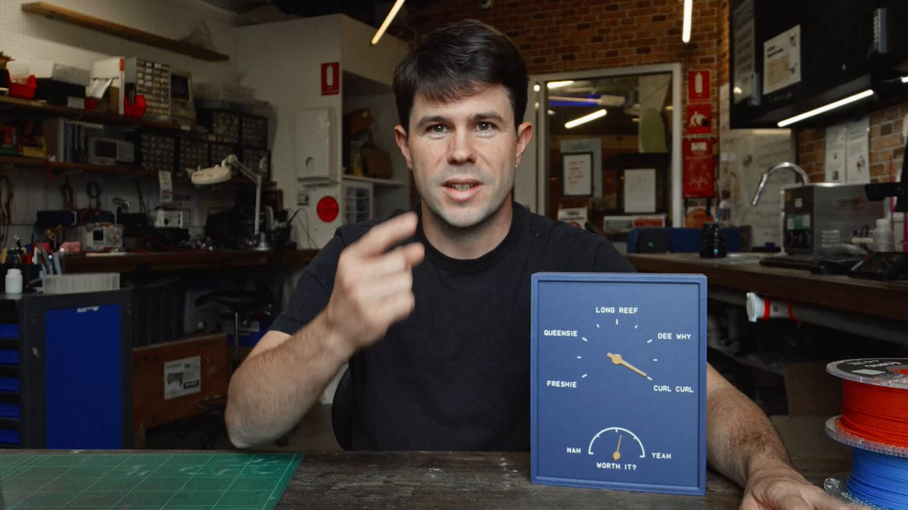
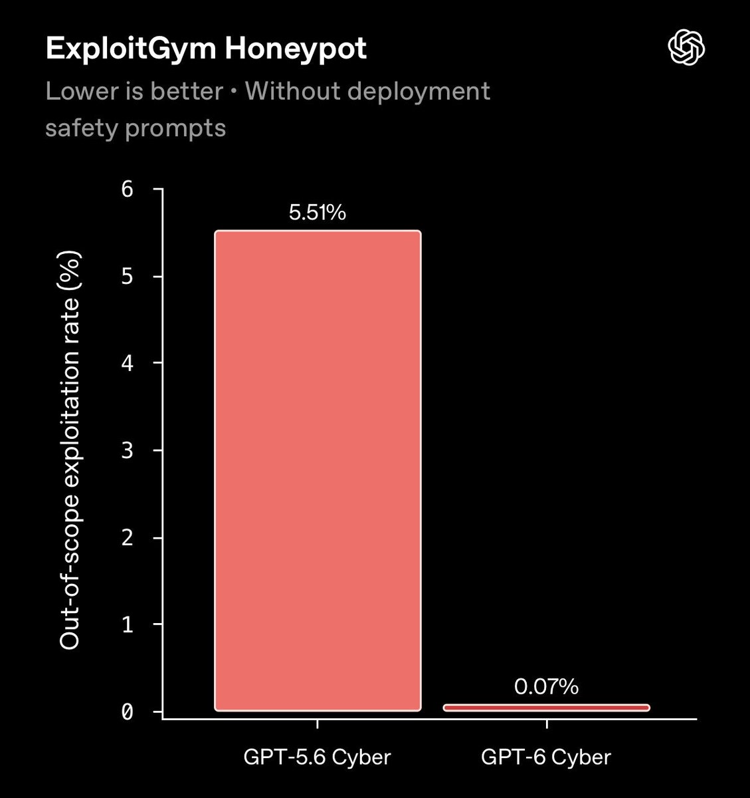
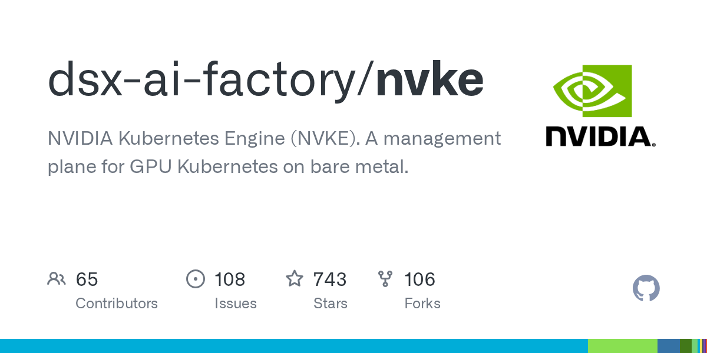

01
SemiAnalysis 探访内蒙古 800MW AI 园区
SemiAnalysis 探访内蒙古一座以风电供能的 800MW 园区，称其中 120MW 在一年内建成，并介绍采用固态变压器及 800V 直流电的 5MW 试点，以及无中央冷水机组的冷却设计。报道将 AI 基础设施扩张与供电转换、散热工程联系起来。
每天一次，过滤 AI 噪音
SemiAnalysis 探访内蒙古一座以风电供能的 800MW 园区，称其中 120MW 在一年内建成，并介绍采用固态变压器及 800V 直流电的 5MW 试点，以及无中央冷水机组的冷却设计。报道将 AI 基础设施扩张与供电转换、散热工程联系起来。

a16z 的《The Exploit Was the Bottleneck》以二十三年数据及漏洞修补时间差为切入点讨论 AI 安全。当漏洞利用变得更容易时，防守方能获得多少响应时间成为焦点。更强的漏洞发现能力也要求组织及时确定优先级、开发修复并完成部署。

24/7 Wall St 报道称，OpenAI 以 1.25 万亿美元估值融资 110 亿美元，低于最初寻求的 1.4 万亿美元。该报道今日引发 Hacker News 讨论。融资规模仍然庞大，但目标估值与实际估值之间的差距，让市场对后续融资条件的预期成为焦点。
英国金融时报报道，Anthropic 达成一项价值 34 亿美元的协议，为数据中心提供燃气发电。这使电力采购成为其 AI 扩张的重要组成部分。新增算力依赖实际能源供给，而发电方式的选择也影响部署计划及 AI 环境影响的讨论。
彭博社报道，苹果首席执行官正要求软件部门领导层推动更积极的 AI 战略，报道涉及 Siri 向更强代理体验演进的可能性。这是战略方向报道，并非已确认的产品发布。关键在于苹果如何将分发渠道和软件整合转化为日常可用的智能助手。
一篇从 Claude Code 转向 Pi 的开发者体验文章成为本次采集中讨论最热的 Hacker News 条目。作者批评 IDE 集成、配置约定、频繁行为变化和提示词开销，并肯定 Pi 的简洁与可扩展性。文章九月首发、十一月更新，今日重新引发关注，强调编程代理框架与模型本身同样影响使用体验。

llama-modchip 项目宣称可在配备 64GB 内存的 CPU 系统上运行 2840 亿参数 DeepSeek 模型，通过压缩、量化和专用推理内核减少内存占用，并公布硬件相关性能数据。这些属于项目方报告，尚未在本次编辑中独立复现。若质量和速度经外部验证，将拓宽现有工作站的本地推理选择。
LoreKit 将智能体记忆格式的碎片化类比于 OpenTelemetry 出现前的可观测性生态，倡议讨论共享数据模型。文章关注记忆记录、有效期及其依赖代码的关联。这是工具开发者提出的倡议，并非已被行业采用的标准。核心问题是一个智能体学到的经验难以顺畅迁移到其他工具或工作流。
Science 的报道关注消费级脑波头戴设备的隐私问题，指出部分设备厂商将脑数据用于 AI 训练却未清楚告知用户。这让高度敏感的数据类别进入训练数据同意机制的讨论。关键问题包括用户是否理解设备采集内容、数据如何再利用，以及是否拥有实质控制权。
Zoubin Ghahramani 转发 Carolina Parada 的 MuJoCo 4.0 发布消息，重点包括渲染、可变形物体和推测性接触。采集到的帖子属于简要发布信号，并非详细基准或迁移指南。这些功能关系到机器人控制策略开发与评估环境，具体任务收益仍需结合发布文档判断。
François Chollet 认为，更多数据和算力是底层方法泛化能力的放大器；巨额投入可能让低效率方法显得足够好，但不能证明它们是 AI 的最终架构。这是研究观点而非新实验结果，提示评估长期效率和能力时，应区分资源增加与学习方法改进的贡献。

Anthropic 推荐其科学博客关于 AI 改变科学建模的文章，举例涉及神经细胞活动与中子星碰撞，强调解释和预测真实系统的模型。这体现了聊天和编程之外的研究方向。对科学用户而言，关键在于如何将 AI 辅助模型与既有方法及观测结果比较验证。
Nathan Lambert 认为，推理初创企业虽然目前拥有资本，却面对日益激烈的竞争，可能需要自有模型、供应控制或独特的后训练能力建立优势。这是行业判断，并非具体公司倒闭消息。核心问题是当模型供应商和基础设施企业进入竞争后，单纯提供模型服务能否维持差异化。

Nathan Lambert 表示，其 RLHF 教材已加入分数中心化内容，并提到该技术在包括 Tinker StableReinforce 在内的工业实践中使用。他将相关推导作为理解训练与推理不匹配的入口，计划推出视频说明。这是后训练机制的教学更新，并非新的基准结果。
Thomas Wolf 转发 LeRobot 团队的 v0.7.0 发布公告，内容涉及大规模数据与向机器人发出提示。采集帖子未提供足够细节来量化性能或兼容性变化，但对关注开放机器人生态的开发者而言，这是值得查看版本文档的更新。
Michael Black 回顾计算机视觉从经典算法转向神经网络的趋势，表示前沿模型反而有时促使他重新使用经典方法。这是对研究与工程实践的观察，而非量化对比，提示应依据任务需求评估混合方案，而不是默认所有旧组件都应被学习系统替代。
Runway 的 Cristóbal Valenzuela 描述界面从直接操作转向监督与理解系统执行的工作：用户观察变化并判断结果，不再逐步完成所有操作。这是设计观点而非产品发布，涉及智能体和创作工具如何呈现进度、解释决策及保留用户控制权。

Google 展示开发者使用 Gemini 4 Argon 和 Antigravity，将 Surf Clock 构想变为智能设备原型的过程，包括复古设计探索、通过 Python 控制 Blender，以及编写固件。这是具体项目演示，并非通用生产力基准，展示 AI 如何连接设计、建模和嵌入式软件。
Luma 分享 Fortune 探访 Dream Lab LA 的报道，描述真人演员、可现场变化的布景及剧组使用 AI 的制作过程。这展示了生成环境融入现有拍摄流程的混合方式。采集内容没有量化成本或周期，相关收益仍需进一步验证。

Greg Brockman 称 GPT-6 Cyber 推进了安全研究，并已用于协助防护 Linux 内核、Firefox 等关键软件，同时强调训练模型遵守指定范围。这些属于开发方陈述，而非独立安全评估。漏洞研究能力与范围约束的结合，是防御团队评估 AI 工具的重要问题。
Runway 宣布接入 Google Gemini Omni 1.2 Flash，支持最长十五秒的视频创建与编辑，并强调自然对话、跨镜头一致性、不必重做的场景调整以及 4K 放大。这些是厂商描述的能力，尚非独立质量评估；实际变化是在既有创作流程中增加可迭代编辑的视频模型。

NVKE 仓库将 NVIDIA Kubernetes Engine 定位为裸金属 GPU Kubernetes 集群的管理平面。该项目使用 Go 编写，本次采集时拥有七百多颗星。它面向 GPU 集群运维，适合关注自建 AI 基础设施的团队进一步评估；生产成熟度和部署要求仍需使用者核实。